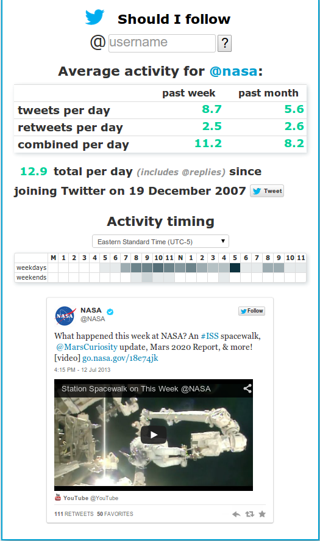
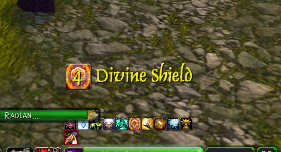
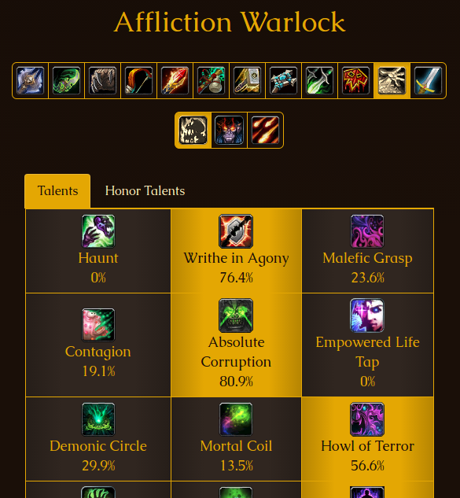
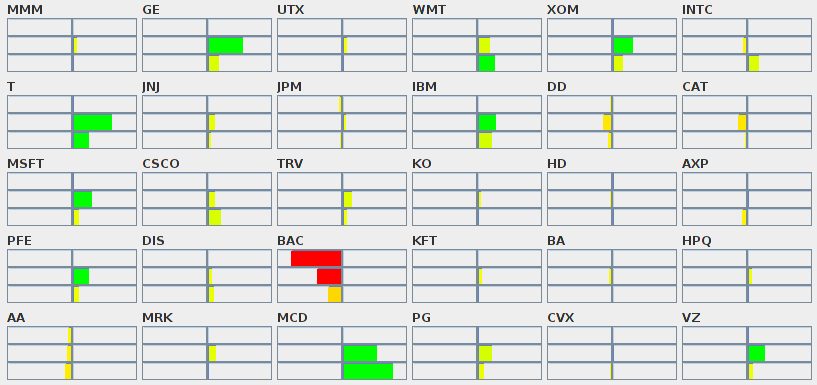
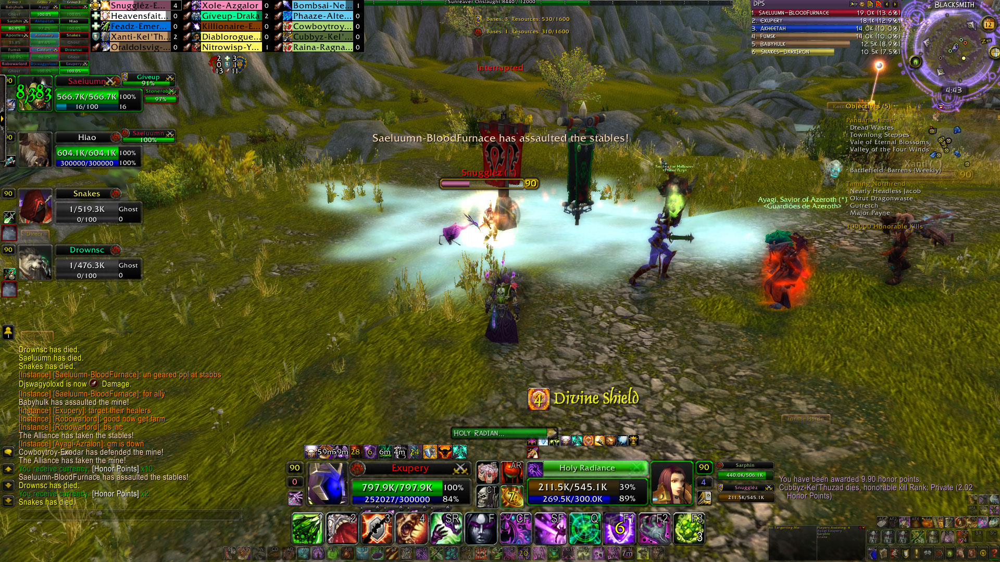

Summary
Currently at VMware working on vCloud Director, which helps to build a simplified Infrastructure as a Service (IaaS) platform to offer services using Virtual Data Centers on top of vSphere, providing virtualized compute, networking, storage, and security. Previously the Software Engineer at StopBadware, a non-profit with a mission of making the Web safer through the prevention, mitigation, and remediation of badware websites.
A former banquet manager, I originally began learning to program only to assist in my hobby of stock trading with no intention of a career change. Soon it was clear I was enjoying the coding not because it would lead to better trading, but because I was enjoying the act of writing code itself - more so than I had ever enjoyed doing anything. It was then I decided my future lay not with hotels, but with software development.
Projects
Quickly assessing someone's Twitter activity by glancing at their profile can be tough to get an accurate idea of tweet frequency; ShouldIFollow was intially created to easily see how often an account tweets and was later expanded to provide other data points.
It displays the following metrics:
- Tweets per day
- Retweets per day
- Most used hashtag
- Number of hashtags used
- Retweeted by others
- Twitter join date
- Timing of tweets
View on GitHub.
StopBadware's Badware Data Sharing Program "...aims to improve security researchers' and practitioners' access to quality, timely data. Participants provide StopBadware with an automated feed of time-stamped badware URLs and related data. The data is shared with other participants and with vetted academic and non-commercial researchers. Data is also used by StopBadware to inform our independent review process, to generate aggregated data, to identify and report on badware trends, and to communicate with site owners and service providers (e.g., Web hosting providers) about badware within their zones of control..." [Excerpt from stopbadware.org/data-sharing]
The Data Sharing Program is three separate Java applications, communicating via combination of API and Iron.io's IronMQ message queues:
- an importer to retrieve the participants' data
- a resolver to resolve all hosts to IPs and all IPs to Autonomous Systems
- the API that provides access to the data (MongoDB is used as a datastore).
There is also a web-app (written in Scala and using the Play framework) to provide administrative functions (whitelisting accounts, requesting API keys, etc) and provide non-programmatic access to the data.
Working on this is a lot of fun as it allows me to combine my enjoyment of World of Warcraft with my passion for coding. DontCast is an addon that warns players when their target would be immune to damage (i.e. "don't bother casting"). It displays the name and icon of their opponent's damage mitigating ability, along with a timer counting down the seconds until the ability expires.
Originally created for my own use but added to Curse in case anyone else found it useful - I thought maybe a dozen people would download it, but as of late 2016 it has over 30,000 downloads!
View on GitHub.
As an avid World of Warcraft PvPer I would frequently find myself looking up players on the leaderboards to see what choices they were making regarding talents, glyphs, and gear. This was a time-consuming process which limited the sample-size and so I created PvP Leaderboard.
PvP Leaderboard looks up (daily) the players on each of the leaderboards and then provides the results (with optional filtering) allowing someone to quickly and easily see the choices top players are making.
On GitHub: web app (Ruby on Rails), updater (Scala).
Received a 3.96 (out of 4.0) on my Capstone Project for WGU, a Java application that predicts stock market movement based on Twitter activity. The program analyzes mentions of a company's ticker symbol to determine a bullish, bearish, or neutral opinion based on the content of each post. Each score is then adjusted for age of post and past accuracy of author before determining the overall sentiment for a stock.

Experience
July 2015 → Present (MTS II)
June 2014 → July 2015 (MTS I)
February 2012 → June 2014
August 2010 → February 2012
March 2010 → August 2010
September 2005 → January 2009
November 2004 → September 2005
Education